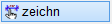
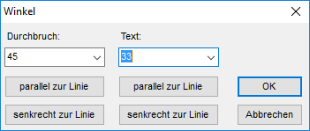

")
")
1.Voreinstellungen
§Wählen Sie im Funktionsbereich einen Durchbruch-Typ aus.
Durchbruch-Typ |
||
|---|---|---|
ohne Schattierung |
mit Schattierung |
einfaches Rechteck |
|
|
|


§Wählen Sie einen Darstellungsstil im Funktionsbereich oder definieren Sie einen neuen Stil.

Öffnen jeweils den Dialog Winkel (im Funktionsbereich).  Durchbruch, Text In beiden Auswahlfeldern stehen die Winkel 0°, 45° und 90° zur Auswahl. Geben Sie bei Bedarf einen Winkel ein. Sie können freie Winkel eingeben. parallel zur Linie / senkrecht zur Linie Durchbruch oder Text parallel / senkrecht zu einer bestimmten Linie auszurichten. Klicken Sie auf die entsprechende Schaltfläche und klicken Sie anschließend in der Zeichnung eine Bezugslinie an. Die Neigung der angeklickten Linie wird in das Eingabefeld im Dialog geschrieben. Bestätigen Sie mit OK, um den Dialog zu schließen und den Durchbruch oder den Text abzusetzen.
Die Eingaben werden übernommen und in der Zeichnung angewandt. Der Dialog wird geschlossen.
Alle Änderungen werden verworfen. Die überschriebenen Werte werden wiederhergestellt. |


2.Durchbruch definieren
§Geben Sie die Länge des rechteckigen Durchbruchs bzw. den Durchmesser für runde Durchbrüche an.
Jede neue Eingabe wird in die Liste unterhalb der Abfrage aufgenommen. Mit einem Klick auf die linke Maustaste wird der Wert aus der Liste für die nächste Abfrage übernommen.
§Geben Sie die Breite eines rechteckigen Durchbruchs an und bestätigen Sie mit der Eingabetaste.
Bei runden Durchbrüchen wird diese Abfrage übersprungen. Mit Rechtsklick können Sie den in der Eingabe stehenden Wert übernehmen.
3.Durchbruch platzieren
§Wählen Sie, ob ohne Eingabe von Differenzen oder mit einer Differenzeingabe die Lage bestimmt werden soll. [X-Lage]; [Y-Lage].
|
Ohne Differenzeingabe. §Klicken Sie jeweils einen Punkt in der Zeichnung an, an dem der Einfügepunkt liegen soll. |
|
Mit Differenzeingabe. §Klicken Sie ein Bezugselement an, zu dem eine Differenz eingegeben werden soll. [X-Lage]. §Geben Sie nach der Linienkennung den Abstand mit dem entsprechenden Vorzeichen ein und bestätigen Sie mit der Eingabetaste. §Geben Sie die Y-Koordinate des Einfügepunktes wie bei [X-Lage] beschrieben an. [Y-Lage]. |


§Klicken Sie bei der Abfrage Text in das Eingabefeld, um den Text zu bearbeiten und bestätigen Sie mit der Eingabetaste.
Mit Rechtsklick übernehmen Sie den vorgeschlagenen Text. Wenn Sie die Schaltfläche Ohne Bezeichnung anklicken, wird an den Durchbruch kein Text geschrieben und die nächste Abfrage übersprungen.
§Legen Sie den Text mit Linksklick an der gewünschten Stelle ab. [Lage].
Sie können sofort einen weiteren Durchbruch zeichnen.
Zugehörige Referenzen: